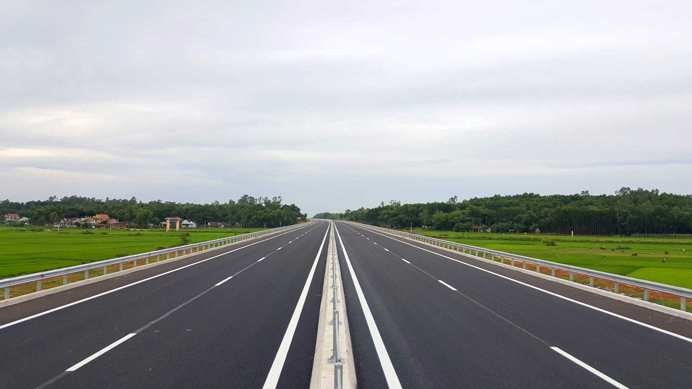

Chương trình đào tạo
Chuyên ngành Công nghệ kỹ thuật Xây dựng Cầu đường bộ
02/2026

Ngành công nghệ kỹ thuật xây dụng Cầu - Đường bộ là một ngành nghề hấp dẫn, thị trường lao động trong 1-2 năm trở lại đây đang thiếu hụt trầm trọng kỹ sư công trình. Tại UTT, ngành Công nghệ kỹ thuật xây dụng Cầu đường bộ cung cấp cho sinh viên kỹ năng tư vấn, thiết kế, thi công, và hoàn thiện công trình cầu đường. Sinh viên được trang bị kỹ năng sử dụng các công nghệ tiên tiến trong thiết kế, mô phỏng và tổ chức thi công, thi công lắp đặt, hoàn thiện công trình. Khả năng tìm tòi phát hiện những vấn đề bất cập trong ngành nghề và đề xuất giải pháp xử lý. Đáp ứng được các yêu cầu của nhà tuyển dụng sau khi ra trường. Trong quá trình học tập, sinh viên tham gia thực hiện các đồ đồ án môn học để hiểu thêm về kiến thức nghề nghiệp cũng như tiếp cận nội dung công việc sau này và 01 đồ án tốt nghiệp. Các kỹ năng có được từ các đồ án này sẽ giúp sinh viên hoàn toàn tự tin khi ra trường, đáp ứng tốt yêu cầu của nhà tuyển dụng.

Dự kiến, đến năm 2030, hệ thống cao tốc trên cả nước sẽ lên hơn 7.000 km
Mục tiêu đào tạo
Đào tạo kỹ sư Công nghệ kỹ thuật xây dựng Cầu - Đường bộ có phẩm chất chính trị, đạo đức và sức khỏe tốt, có trách nhiệm với xã hội; nắm vững các kiến thức cơ bản về kinh tế - xã hội, chính trị, an ninh quốc phòng; có kiến thức khoa học cơ bản, cơ sở và chuyên sâu về xây dựng Cầu - Đường bộ; có năng lực thực hành nghề nghiệp, năng lực nghiên cứu khoa học, năng lực tư duy sáng tạo, khả năng thích ứng nhanh với những tiến bộ của khoa học công nghệ trong lĩnh vực Công nghệ kỹ thuật xây dựng Cầu - Đường bộ; có kỹ năng tin học, tiếng Anh giao tiếp và tiếng Anh chuyên ngành thành thạo.
Vị trí và nơi làm việc sau khi tốt nghiệp
- Kỹ sư tư vấn tại các đơn vị tư vấn, thiết kế, giám sát;
- Kỹ sư thi công trong các công ty xây dựng công trình giao thông, công trình xây dựng... ở trong và ngoài nước.
- Làm việc trong các cơ quan quản lý;
- Cán bộ nghiên cứu trong các Viện nghiên cứu; Giảng dạy trong các trường đại học, cao đẳng, trung học và dạy nghề.
Cấu trúc của chương trình đào tạo
| Kiến thức | Bắt buộc (TC) | Tự chọn (TC) | Khối lượng (Tín chỉ) |
|---|---|---|---|
| 1. Kiến thức giáo dục đại cương | 41 | 0 | 41 |
| 2. Kiến thức bổ trợ | 6 | 3 | 9 |
| 3. Kiến thức giáo dục chuyên nghiệp | 87 | 8 | 95 |
| 3.1. Kiến thức cơ sở ngành | 32 | 0 | 32 |
| 3.2. Kiến thức ngành | 13 | 4 | 17 |
| 3.3. Kiến thức chuyên ngành | 42 | 4 | 46 |
| 4. Học phần tốt nghiệp | 20 | 0 | 20 |
| 4.1. Thực tập tốt nghiệp | 12 | 0 | 12 |
| 4.2. Khóa luận/Đồ án tốt nghiệp | 8 | 8 | |
| Tổng số | 154 | 11 | 165 |
Chương trình được xây dựng theo các quy định hiện hành của Bộ Giáo dục và Đào tạo theo định hướng ứng dụng, có sự tham khảo CTĐT của các Trường đại học có uy tín trong nước có cùng lĩnh vực đào tạo với Nhà trường. Đồng thời tham khảo CTĐT của một số trường đại học có uy tín của một số nước tiên tiến trên thế giới, như trường đại học Gunma, Hiroshima - Nhật Bản, Đại học tổng hợp Kỹ thuật Giao thông đường bộ Matxcova (MADI), Đại học Valenciennes, Đại học Cergy-Pontoise, Viện khoa học ứng dụng quốc gia Pháp.
Địa điểm nhận hồ sơ và điện thoại liên hệ
- Cơ sở đào tạo Hà Nội: Phòng 104 – Nhà H1, số 54 Triều Khúc, Thanh Liệt, Hà Nội. Điện thoại: 097.209.1290 (cô Ly); 097.853.7248 (thầy Hoàng Tuấn); 096.606.0713 (cô Huyền)
- Cơ sở đào tạo Phú Thọ: Phòng 204 – Nhà B3, số 278 Lam Sơn, phường Vĩnh Yên. Điện thoại: 0211 3712296; 096.951.1225 (cô Giang)
- Cơ sở đào tạo Thái Nguyên: Phòng 104 – Nhà Hiệu bộ, số 999 Phú Thái. Điện thoại: 0982148991 (thầy Lý)